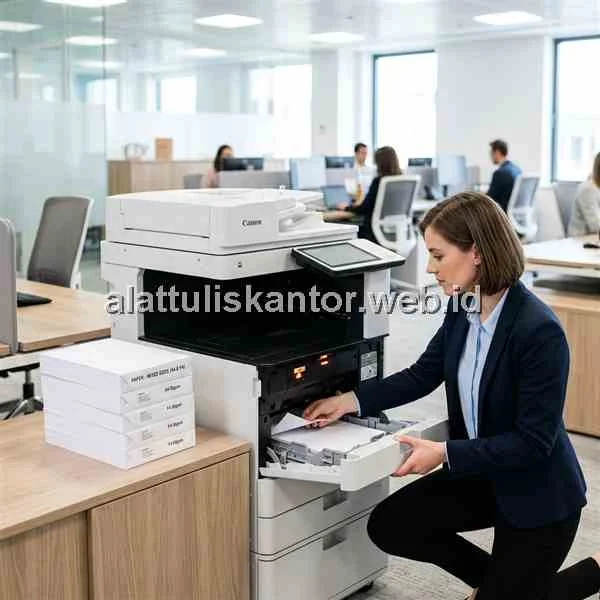

Pengantar: Kertas Macet Akibat Salah Ukuran
Kertas macet atau paper jam yang terus-menerus terjadi di mesin printer laser kantor sering kali membuat frustrasi, dan tidak sedikit orang langsung menyalahkan mesin printer sebagai biang keladinya. Padahal, salah satu penyebab paper jam yang paling umum justru berasal dari kesalahan pemilihan ukuran atau kualitas kertas HVS yang digunakan, terutama ketika kertas F4, A4, dan Q4 tertukar penggunaannya karena kemiripan ukuran yang membingungkan banyak staf administrasi.
Artikel ini mengulas perbedaan ukuran kertas HVS populer di Indonesia—F4, A4, dan Q4—beserta penggunaan idealnya masing-masing, sekaligus tips memilih kertas HVS grosir yang tepat agar printer laser kantor Anda bebas dari masalah paper jam berulang.
ATK Prima Distribusi menyediakan berbagai jenis kertas HVS grosir berkualitas tinggi dari merek ternama. Untuk kebutuhan kertas kantor Anda, segera konsultasikan via WhatsApp di 088989643555.
Ringkasan Perbedaan Ukuran Kertas F4, A4, dan Q4
Kertas F4 (215 x 330 mm) adalah ukuran folio yang umum digunakan untuk dokumen resmi dan legal di Indonesia. Kertas A4 (210 x 297 mm) adalah ukuran standar internasional yang paling banyak digunakan untuk surat-menyurat dan pencetakan umum. Kertas Q4 (215 x 315 mm) adalah ukuran quarto yang berada di antara F4 dan A4, sering digunakan sebagai alternatif F4 karena harganya sedikit lebih murah namun memiliki panjang yang berbeda dari F4 asli. Ketertukaran pengaturan ukuran kertas di printer inilah yang paling sering menjadi penyebab paper jam berulang.
Mengapa Paper Jam Sering Terjadi Akibat Ukuran Kertas
Printer laser memiliki sensor yang mendeteksi panjang kertas berdasarkan pengaturan ukuran yang dipilih di driver printer. Jika kertas fisik yang dimasukkan (misalnya Q4 dengan panjang 315mm) tidak sesuai dengan pengaturan ukuran di printer (yang diset F4 dengan panjang 330mm), sensor akan mendeteksi ketidaksesuaian dan memicu paper jam meskipun kertas sebenarnya dalam kondisi baik dan tidak cacat.
Detail Ukuran dan Penggunaan Kertas HVS Populer
Kertas F4 (Folio) - 215 x 330 mm
Kertas F4 adalah ukuran yang paling umum digunakan untuk dokumen resmi pemerintahan, kontrak, dan surat-surat legal di Indonesia. Panjangnya yang lebih besar dari A4 membuat F4 ideal untuk dokumen dengan banyak baris teks seperti tabel keuangan atau lampiran teknis.
Kertas A4 - 210 x 297 mm
Kertas A4 adalah standar internasional (ISO 216) yang paling banyak digunakan di seluruh dunia, termasuk untuk surat-menyurat umum, laporan, presentasi, dan dokumen sehari-hari. Hampir semua printer dan aplikasi perkantoran menjadikan A4 sebagai pengaturan default.
Kertas Q4 (Quarto) - 215 x 315 mm
Kertas Q4 sering dijadikan alternatif kertas F4 karena harganya sedikit lebih murah, namun panjangnya 15mm lebih pendek dari F4 asli. Perbedaan ini tampak kecil, namun cukup untuk memicu paper jam jika pengaturan printer masih diset ke ukuran F4 standar.
Tabel Perbandingan Ukuran dan Penggunaan Kertas HVS
| Jenis Kertas | Ukuran (mm) | Penggunaan Utama | Risiko Paper Jam (Jika Salah Set) |
|---|---|---|---|
| F4 (Folio) | 215 x 330 | Dokumen resmi, kontrak, legal | Tinggi jika diset sebagai A4/Q4 |
| A4 | 210 x 297 | Surat umum, laporan, presentasi | Rendah, standar default printer |
| Q4 (Quarto) | 215 x 315 | Alternatif F4, dokumen internal | Tinggi jika diset sebagai F4 |
Cara Mencegah Paper Jam Akibat Kesalahan Ukuran Kertas
- Selalu sesuaikan pengaturan ukuran kertas di driver printer dengan ukuran fisik kertas yang dimasukkan ke tray.
- Beri label pada setiap tumpukan stok kertas (F4, A4, atau Q4) agar staf tidak keliru mengambil jenis yang salah.
- Hindari mencampur dua ukuran kertas berbeda dalam satu tray printer yang sama.
- Gunakan kertas HVS dengan gramasi konsisten (biasanya 70-80 gsm) agar sensor ketebalan printer tidak salah baca.
- Simpan kertas di tempat kering untuk mencegah kertas melengkung akibat kelembapan, yang juga dapat memicu paper jam.
Memilih Kertas HVS Grosir yang Tepat untuk Printer Laser
Selain memastikan ukuran yang tepat, kualitas kertas HVS itu sendiri turut memengaruhi kelancaran proses pencetakan. Kertas HVS grosir berkualitas baik memiliki permukaan yang rata dan gramasi konsisten di seluruh lembar, sehingga mengurangi risiko kertas robek atau terlipat saat ditarik mekanisme printer laser. Membeli kertas HVS dalam skema grosir per dus atau per rim juga memastikan seluruh stok berasal dari batch produksi yang sama, mengurangi variasi ketebalan yang kadang terjadi jika kertas dibeli eceran dari berbagai sumber berbeda.
Studi Kasus: Mengatasi Paper Jam Berulang di Kantor Kecamatan Wonosari
Kantor Kecamatan Wonosari sempat mengalami paper jam hampir setiap hari pada salah satu printer laser mereka, yang awalnya dikira kerusakan mesin. Setelah dilakukan pengecekan, ditemukan bahwa staf secara tidak sengaja mencampur kertas Q4 dan F4 dalam satu tray yang sama, sementara pengaturan printer tetap diset ke ukuran F4. Setelah memisahkan stok kertas dengan label jelas dan menstandarkan penggunaan hanya kertas F4 asli untuk printer tersebut, masalah paper jam berulang tidak lagi terjadi dalam waktu lebih dari dua bulan pemakaian normal.
Dampak Kualitas Kertas terhadap Umur Pakai Printer
Selain menyebabkan paper jam, penggunaan kertas HVS berkualitas rendah dalam jangka panjang juga dapat mempercepat keausan komponen internal printer laser, seperti roller penarik kertas dan fuser unit yang bertugas melelehkan toner ke permukaan kertas. Kertas dengan serbuk atau residu berlebih cenderung meninggalkan sisa partikel yang menumpuk pada roller, sehingga lambat laun mengurangi daya cengkeram roller terhadap kertas dan meningkatkan frekuensi kemacetan meskipun ukuran kertas sudah sesuai pengaturan.
Investasi pada kertas HVS grosir berkualitas baik dari sumber terpercaya, meskipun harganya sedikit lebih tinggi dibanding kertas kualitas rendah, pada akhirnya dapat menghemat biaya perawatan dan penggantian komponen printer dalam jangka panjang, selain juga mengurangi waktu kerja yang terbuang akibat gangguan pencetakan yang berulang.
Pertanyaan yang Sering Diajukan (FAQ)
Kesimpulan
Memahami perbedaan ukuran kertas F4, A4, dan Q4 bukan sekadar pengetahuan teknis, melainkan langkah praktis untuk mencegah masalah paper jam yang berulang di printer laser kantor. Dengan menstandarkan jenis kertas, memberi label stok yang jelas, dan memilih kertas HVS grosir berkualitas konsisten, proses pencetakan dokumen kantor akan jauh lebih lancar dan efisien.
Butuh pasokan kertas HVS grosir berkualitas yang aman untuk printer korporat Anda? Cek penawaran terbaik di halaman Katalog Produk Kami atau hubungi tim ATK Prima Distribusi via WhatsApp di 088989643555 untuk pengiriman cepat se-Jabodetabek.